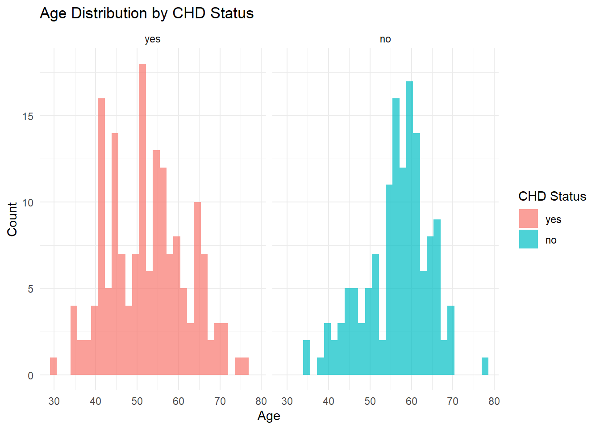
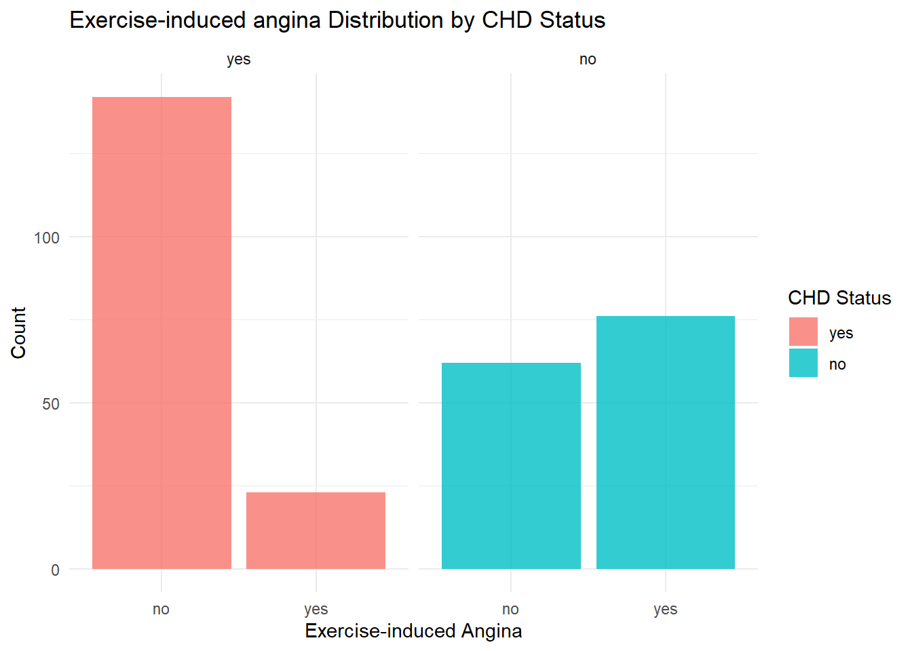
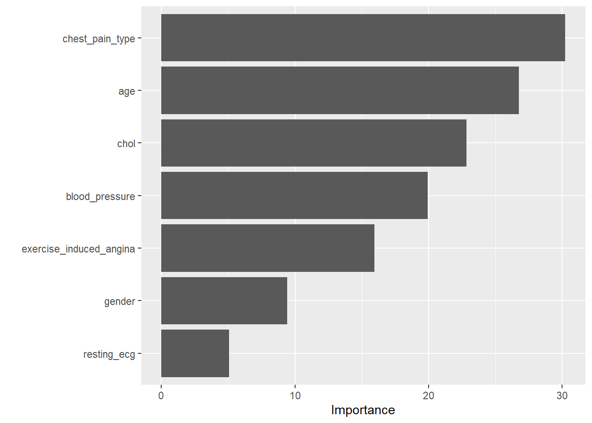
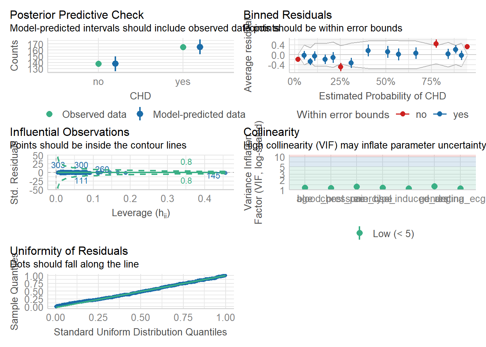
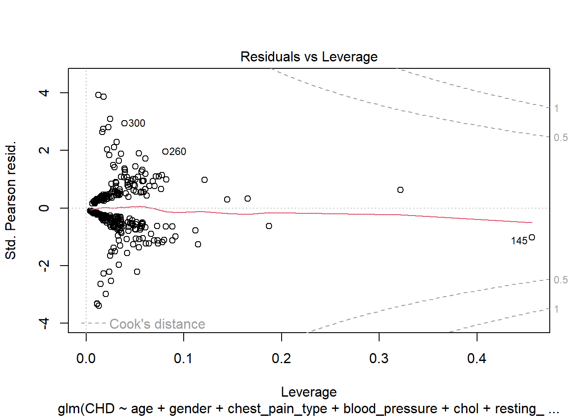
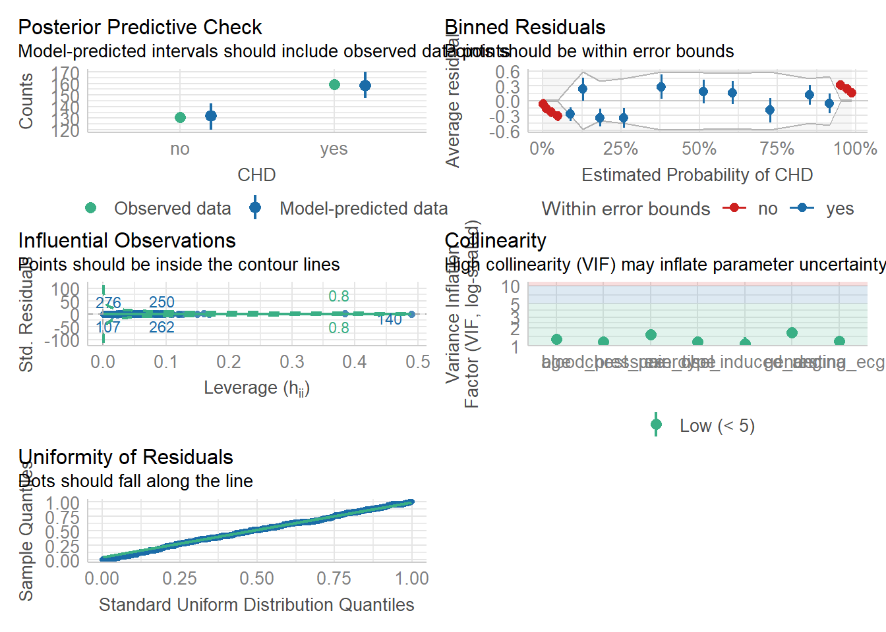

library(tidyverse)
library(broom)
library(readr)
library(gtsummary)
library(corrplot)
library(caret)
library(mfp)
library(ggplot2)
library(generalhoslem)
library(ResourceSelection)
library(dagitty)
library(DescTools)
library(dplyr)
library(knitr)
library(sjPlot)
library(performance)Assignment Multiple Logistic Regression
Group Members:
1) Muhammad Ruhaifi bin Muhammad Sabri (22305762)
2) Dzul Hairy bin Mohd Ramlan (22305758)
3) Nur Shuhaiza binti Supian (22306056)
4) Aziemah binti Nafsun (22305774)
5) Noor Nazli bt Din (22306061)
Workflow
Introduction
Methodology
Prepare data
Research question
Variable selection
Read data
View data
Describe data
Explore data
Estimation
Model selection
Prediction
Model checking
Presentation
Interpretation
Introduction
We intend to analyze data related to cardiac features of patients from the “heart.xlsx” dataset. This dataset provides various information about patients, including age, gender, chest pain type, blood pressure, cholesterol levels, resting electrocardiographic (ECG) features, and more. We will attempt to create multivariate model to pinpoint the risk factors of heart disease as well as predict overall risk.
Methodology
We will use multiple logistic regression model approach to analyse predictors to explain variation of CHD in sample population. Variables will be selected based on a Directed Acyclic Graph (DAG). Following variable selection, the first model will consist of a univariate analysis of the selected variables. Second model consists of multivariate of the selected variables and another model will be constructed by adding interaction term between age and gender as there might be a non-additive effect of age and gender on the likelihood of CHD, meaning the combined effect of these two variables is not simply the sum of their separate effects. Model comparison will be executed using anova test to select the final model. Model assessment will be conducted by running the diagnostic plot and checking the model for any influential observation before final model is concluded.
Prepare Data
Research Question
Is there any association between age, gender, chest pain type, resting blood pressure, cholesterol level, resting ECG, and exercise-induced angina with CHD in an adult population?
Variable Selection
# Load the dagitty package
library(dagitty)
# Define the DAG
DAG <- dagitty ('dag {
chest pain [pos="0.065,0.288"]
chol [pos="0.147,0.192"]
angina [pos="0.150,0.667"]
BP [pos="0.639,0.179"]
ECG [pos="0.490,0.685"]
CHD [pos="0.367,0.330"]
age [pos="0.210,0.039"]
gender [pos="0.461,0.033"]
chest pain -> angina
chest pain -> ECG
chest pain -> CHD
chol -> CHD
angina -> CHD
BP -> resting ECG
BP -> CHD
ECG -> CHD
age -> chol
age -> BP
age -> CHD
gender -> chol
gender -> BP
gender -> CHD
}')
# Visualize the DAG
plot(DAG)
Read Data
library(readxl)
CHD <- read_excel("heart.xlsx")View Data
library(dplyr)
glimpse(CHD)Rows: 303
Columns: 8
$ age <dbl> 63, 37, 41, 56, 57, 57, 56, 44, 52, 57, 54, 48…
$ gender <chr> "female", "female", "male", "female", "male", …
$ chest_pain_type <chr> "asymptomatic", "non-anginal pain", "atypical …
$ blood_pressure <dbl> 145, 130, 130, 120, 120, 140, 140, 120, 172, 1…
$ chol <dbl> 233, 250, 204, 236, 354, 192, 294, 263, 199, 1…
$ resting_ecg <chr> "normal", "ST-T waze abnormality", "normal", "…
$ exercise_induced_angina <chr> "no", "no", "no", "no", "yes", "no", "no", "no…
$ CHD <chr> "yes", "yes", "yes", "yes", "yes", "yes", "yes…Describe Data
Convert “character” into “factor” variable
library(haven)
CHD<-
CHD %>%
mutate(across(where(is.character), as_factor))
summary(CHD) age gender chest_pain_type blood_pressure
Min. :29.00 female:207 asymptomatic : 23 Min. : 94.0
1st Qu.:47.50 male : 96 non-anginal pain: 87 1st Qu.:120.0
Median :55.00 atypical angina : 50 Median :130.0
Mean :54.37 typical angina :143 Mean :131.6
3rd Qu.:61.00 3rd Qu.:140.0
Max. :77.00 Max. :200.0
chol resting_ecg exercise_induced_angina
Min. :126.0 normal :147 no :204
1st Qu.:211.0 ST-T waze abnormality :152 yes: 99
Median :240.0 left ventricular hypertrophy: 4
Mean :246.3
3rd Qu.:274.5
Max. :564.0
CHD
yes:165
no :138
Explore Data
For continuous data: We employ histograms to gain insight into the distribution of each feature. This allows us to understand the central tendency, spread, and shape of the dataset’s distribution.
age
ggplot(CHD, aes(x = age, fill = factor(CHD))) + geom_histogram(bins = 30, alpha = 0.7, position = "identity") + facet_wrap(~ CHD) + labs(title = "Age Distribution by CHD Status", x = "Age", y = "Count", fill = "CHD Status") + theme_minimal()
resting blood pressure
ggplot(CHD, aes(x = blood_pressure, fill = factor(CHD))) + geom_histogram(bins = 30, alpha = 0.7, position = "identity") + facet_wrap(~ CHD) + labs(title = "Resting Blood Pressure Distribution by CHD Status", x = "Resting Blood Pressure", y = "Count", fill = "CHD Status") + theme_minimal()cholesterol level
ggplot(CHD, aes(x = chol, fill = factor(CHD))) + geom_histogram(bins = 30, alpha = 0.7, position = "identity") + facet_wrap(~ CHD) + labs(title = "Resting Blood Pressure Distribution by CHD Status", x = "Cholesterol level", y = "Count", fill = "CHD Status") + theme_minimal()
For categorical data: Bar plots are utilized to visualize the frequency of each category. This provides a clear representation of the prominence of each category within the respective feature.
gender
ggplot(CHD, aes(x = gender, fill = CHD)) + geom_bar(position = "dodge", alpha = 0.8) + facet_wrap(~ factor(CHD), nrow = 1) + labs(title = "Gender Distribution by CHD Status", x = "Gender", y = "Count", fill = "CHD Status") + theme_minimal()
chest pain type
ggplot(CHD, aes(x = chest_pain_type, fill = CHD)) + geom_bar(position = "dodge", alpha = 0.8) + facet_wrap(~ factor(CHD), nrow = 5) + labs(title = "Chest pain type Distribution by CHD Status", x = "Chest Pain Type", y = "Count", fill = "CHD Status") + theme_minimal()
resting ECG
ggplot(CHD, aes(x = resting_ecg, fill = CHD)) + geom_bar(position = "dodge", alpha = 0.8) + facet_wrap(~ factor(CHD), nrow = 2) + labs(title = "Resting ECG Distribution by CHD Status", x = "Resting ECG", y = "Count", fill = "CHD Status") + theme_minimal()
exercise-induce angina
ggplot(CHD, aes(x = exercise_induced_angina, fill = CHD)) + geom_bar(position = "dodge", alpha = 0.8) + facet_wrap(~ factor(CHD), nrow = 1) + labs(title = "Exercise-induced angina Distribution by CHD Status", x = "Exercise-induced Angina", y = "Count", fill = "CHD Status") + theme_minimal()
Estimation
Univariate Analysis
age (age)
SLR.age <- glm(CHD ~ age, data = CHD, family = binomial) tab_model(SLR.age)CHD Predictors Odds Ratios CI p (Intercept) 0.05 0.01 – 0.21 <0.001 age 1.05 1.03 – 1.08 <0.001 Observations 303 R2 Tjur 0.051 gender (gender)
SLR.gender <- glm(CHD ~ gender, data = CHD, family = binomial) tab_model(SLR.gender)CHD Predictors Odds Ratios CI p (Intercept) 1.23 0.93 – 1.61 0.145 gender [male] 0.27 0.16 – 0.46 <0.001 Observations 303 R2 Tjur 0.079 chest pain type (chest_pain_type)
SLR.chest_pain <- glm(CHD ~ chest_pain_type, data = CHD, family = binomial) tab_model(SLR.chest_pain)CHD Predictors Odds Ratios CI p (Intercept) 0.44 0.17 – 1.02 0.068 chest pain type
[non-anginal pain]0.60 0.22 – 1.75 0.324 chest pain type [atypical
angina]0.50 0.16 – 1.61 0.237 chest pain type [typical
angina]6.10 2.41 – 16.92 <0.001 Observations 303 R2 Tjur 0.270 resting blood pressure (blood_pressure)
SLR.bp <- glm(CHD ~ blood_pressure, data = CHD, family = binomial) tab_model(SLR.bp)CHD Predictors Odds Ratios CI p (Intercept) 0.09 0.01 – 0.52 0.008 blood pressure 1.02 1.00 – 1.03 0.013 Observations 303 R2 Tjur 0.021 cholesterol level (chol)
SLR.chol <- glm(CHD ~ chol, data = CHD, family = binomial) tab_model(SLR.chol)CHD Predictors Odds Ratios CI p (Intercept) 0.37 0.12 – 1.11 0.080 chol 1.00 1.00 – 1.01 0.141 Observations 303 R2 Tjur 0.007 resting ECG (resting_ecg)
SLR.ecg <- glm(CHD ~ resting_ecg, data = CHD, family = binomial) tab_model(SLR.ecg)CHD Predictors Odds Ratios CI p (Intercept) 1.16 0.84 – 1.61 0.365 resting ecg [ST-T waze
abnormality]0.50 0.32 – 0.80 0.003 resting ecg [left
ventricular hypertrophy]2.58 0.32 – 52.87 0.416 Observations 303 R2 Tjur 0.033 exercise-induced angina (exercise_induced_angina)
SLR.angina <- glm(CHD ~ exercise_induced_angina, data = CHD, family = binomial) tab_model(SLR.angina)CHD Predictors Odds Ratios CI p (Intercept) 0.44 0.32 – 0.59 <0.001 exercise induced angina
[yes]7.57 4.41 – 13.39 <0.001 Observations 303 R2 Tjur 0.191
#create a summary table for each model with confidence intervals
tbl_age <- tbl_regression(SLR.age, exponentiate = TRUE, conf.level = 0.95)
tbl_gender <- tbl_regression(SLR.gender, exponentiate = TRUE, conf.level = 0.95)
tbl_chest_pain <- tbl_regression(SLR.chest_pain, exponentiate = TRUE, conf.level = 0.95)
tbl_bp <- tbl_regression(SLR.bp, exponentiate = TRUE, conf.level = 0.95)
tbl_chol <- tbl_regression(SLR.chol, exponentiate = TRUE, conf.level = 0.95)
tbl_ecg <- tbl_regression(SLR.ecg, exponentiate = TRUE, conf.level = 0.95)
tbl_angina <- tbl_regression(SLR.angina, exponentiate = TRUE, conf.level = 0.95)
#Combine all tables into one
SLR_table <- tbl_stack(
list(tbl_age, tbl_gender, tbl_chest_pain, tbl_bp, tbl_chol, tbl_ecg, tbl_angina)
) %>%
as_gt() %>%
gt::tab_header(
title = "Simple Logistic Regression Model"
)
#Print the summary table
SLR_table| Simple Logistic Regression Model | |||
|---|---|---|---|
| Characteristic | OR1 | 95% CI1 | p-value |
| age | 1.05 | 1.03, 1.08 | <0.001 |
| gender | |||
| female | — | — | |
| male | 0.27 | 0.16, 0.46 | <0.001 |
| chest_pain_type | |||
| asymptomatic | — | — | |
| non-anginal pain | 0.60 | 0.22, 1.75 | 0.3 |
| atypical angina | 0.50 | 0.16, 1.61 | 0.2 |
| typical angina | 6.10 | 2.41, 16.9 | <0.001 |
| blood_pressure | 1.02 | 1.00, 1.03 | 0.013 |
| chol | 1.00 | 1.00, 1.01 | 0.14 |
| resting_ecg | |||
| normal | — | — | |
| ST-T waze abnormality | 0.50 | 0.32, 0.80 | 0.003 |
| left ventricular hypertrophy | 2.58 | 0.32, 52.9 | 0.4 |
| exercise_induced_angina | |||
| no | — | — | |
| yes | 7.57 | 4.41, 13.4 | <0.001 |
| 1 OR = Odds Ratio, CI = Confidence Interval | |||
Multiple Logistic Regression Without Interaction Model (Model A)
Model A: MLR without interaction with CHD
Predictors: Age, Gender, Chest pain type, blood pressure, cholesterol level, resting ECG, exercise-induced angina
MLR_modA <- glm(CHD ~ age + gender + chest_pain_type + blood_pressure + chol + resting_ecg + exercise_induced_angina ,
family = binomial,
data = CHD)
tab_model(MLR_modA)| CHD | |||
| Predictors | Odds Ratios | CI | p |
| (Intercept) | 0.00 | 0.00 – 0.03 | <0.001 |
| age | 1.05 | 1.02 – 1.09 | 0.005 |
| gender [male] | 0.15 | 0.07 – 0.31 | <0.001 |
| chest pain type [non-anginal pain] |
1.12 | 0.36 – 3.69 | 0.850 |
| chest pain type [atypical angina] |
1.05 | 0.29 – 3.86 | 0.943 |
| chest pain type [typical angina] |
8.06 | 2.74 – 26.09 | <0.001 |
| blood pressure | 1.02 | 1.00 – 1.03 | 0.089 |
| chol | 1.00 | 1.00 – 1.01 | 0.234 |
| resting ecg [ST-T waze abnormality] |
0.63 | 0.34 – 1.16 | 0.139 |
| resting ecg [left ventricular hypertrophy] |
2.82 | 0.23 – 79.46 | 0.462 |
| exercise induced angina [yes] |
3.30 | 1.69 – 6.57 | 0.001 |
| Observations | 303 | ||
| R2 Tjur | 0.422 | ||
Multiple Logistic Regression With Interaction Model (Model B)
MLR_modB <- glm(CHD ~ age + gender + chest_pain_type + blood_pressure + chol + resting_ecg + exercise_induced_angina + age:gender ,
family = binomial,
data = CHD)
tab_model(MLR_modB)| CHD | |||
| Predictors | Odds Ratios | CI | p |
| (Intercept) | 0.00 | 0.00 – 0.04 | <0.001 |
| age | 1.05 | 1.01 – 1.10 | 0.019 |
| gender [male] | 0.08 | 0.00 – 9.12 | 0.312 |
| chest pain type [non-anginal pain] |
1.12 | 0.36 – 3.67 | 0.852 |
| chest pain type [atypical angina] |
1.05 | 0.29 – 3.85 | 0.944 |
| chest pain type [typical angina] |
8.06 | 2.74 – 26.02 | <0.001 |
| blood pressure | 1.02 | 1.00 – 1.03 | 0.087 |
| chol | 1.00 | 1.00 – 1.01 | 0.236 |
| resting ecg [ST-T waze abnormality] |
0.62 | 0.33 – 1.16 | 0.134 |
| resting ecg [left ventricular hypertrophy] |
2.68 | 0.23 – 76.73 | 0.482 |
| exercise induced angina [yes] |
3.34 | 1.70 – 6.67 | 0.001 |
| age × gender [male] | 1.01 | 0.93 – 1.10 | 0.797 |
| Observations | 303 | ||
| R2 Tjur | 0.421 | ||
Model Selection
Likelihood Ratio Test will be used for selection model since AIC for both model (MLR_modA and MLR_modB) almost similar (292.25,294.18)
# Perform the Likelihood Ratio Test and save the result to 'lr_test'
lr_test <- anova(MLR_modA, MLR_modB, test = "Chisq")
# Print the result of the Likelihood Ratio Test
lr_testAnalysis of Deviance Table
Model 1: CHD ~ age + gender + chest_pain_type + blood_pressure + chol +
resting_ecg + exercise_induced_angina
Model 2: CHD ~ age + gender + chest_pain_type + blood_pressure + chol +
resting_ecg + exercise_induced_angina + age:gender
Resid. Df Resid. Dev Df Deviance Pr(>Chi)
1 292 270.25
2 291 270.19 1 0.066366 0.7967Since p-value is 0.7967, the interaction term does not significantly improve the model, thus simpler model (MLR_modA) is choose for ease of interpretation.
Multicollinearity checking
Variance Inflation Factor (VIF) is used in this MLR model to check for multicollinearity. High VIF values indicate multicollinearity, meaning that one of the predictor is highly correlated with other predictors in the model.
library(car)
# Calculate VIF values for the final model
MLR_final <- MLR_modA
vif_MLR_final <- vif(MLR_final)
print(vif_MLR_final) GVIF Df GVIF^(1/(2*Df))
age 1.165690 1 1.079671
gender 1.278260 1 1.130602
chest_pain_type 1.242445 3 1.036843
blood_pressure 1.130152 1 1.063086
chol 1.151653 1 1.073151
resting_ecg 1.103812 2 1.025000
exercise_induced_angina 1.094765 1 1.046310All VIF values are close to 1, which is well below the common thresholds of 5 or 10 that indicate multicollinearity. This suggest that there is no significant multicollinearity among the predictors in the model.
Variables Importance
library(randomForest)
rf <- randomForest(CHD ~ age + gender + chest_pain_type + blood_pressure + chol + resting_ecg + exercise_induced_angina,
data = CHD)
library(vip)
vip(rf)
The plot highlights that chest pain type, age, and cholesterol level are the most influential predictors, meaning they have the greatest impact on predicting the outcome. On the other hand, variables like blood pressure, exercise-induced angina, gender and resting ECG have less influence in comparison.
Prediction
final_model <- glm(CHD ~ age + gender + chest_pain_type + blood_pressure + chol + resting_ecg + exercise_induced_angina,
data = CHD,
family = binomial)
#predicted log odds
library(gtsummary)
tbl_regression(final_model, conf.level = 0.95)| Characteristic | log(OR)1 | 95% CI1 | p-value |
|---|---|---|---|
| age | 0.05 | 0.02, 0.09 | 0.005 |
| gender | |||
| female | — | — | |
| male | -1.9 | -2.7, -1.2 | <0.001 |
| chest_pain_type | |||
| asymptomatic | — | — | |
| non-anginal pain | 0.11 | -1.0, 1.3 | 0.9 |
| atypical angina | 0.05 | -1.2, 1.4 | >0.9 |
| typical angina | 2.1 | 1.0, 3.3 | <0.001 |
| blood_pressure | 0.02 | 0.00, 0.03 | 0.089 |
| chol | 0.00 | 0.00, 0.01 | 0.2 |
| resting_ecg | |||
| normal | — | — | |
| ST-T waze abnormality | -0.46 | -1.1, 0.15 | 0.14 |
| left ventricular hypertrophy | 1.0 | -1.5, 4.4 | 0.5 |
| exercise_induced_angina | |||
| no | — | — | |
| yes | 1.2 | 0.52, 1.9 | <0.001 |
| 1 OR = Odds Ratio, CI = Confidence Interval | |||
#Predicted odd ratio
tbl_regression(final_model, exponentiate = TRUE, conf.level = 0.95)| Characteristic | OR1 | 95% CI1 | p-value |
|---|---|---|---|
| age | 1.05 | 1.02, 1.09 | 0.005 |
| gender | |||
| female | — | — | |
| male | 0.15 | 0.07, 0.31 | <0.001 |
| chest_pain_type | |||
| asymptomatic | — | — | |
| non-anginal pain | 1.12 | 0.36, 3.69 | 0.9 |
| atypical angina | 1.05 | 0.29, 3.86 | >0.9 |
| typical angina | 8.06 | 2.74, 26.1 | <0.001 |
| blood_pressure | 1.02 | 1.00, 1.03 | 0.089 |
| chol | 1.00 | 1.00, 1.01 | 0.2 |
| resting_ecg | |||
| normal | — | — | |
| ST-T waze abnormality | 0.63 | 0.34, 1.16 | 0.14 |
| left ventricular hypertrophy | 2.82 | 0.23, 79.5 | 0.5 |
| exercise_induced_angina | |||
| no | — | — | |
| yes | 3.30 | 1.69, 6.57 | <0.001 |
| 1 OR = Odds Ratio, CI = Confidence Interval | |||
#Fitted values
library(broom)
fitted_values_m <- augment(final_model, type.predict = 'response')Model Checking
#check model assumption
check_model(final_model)
1) Overall fitness (accuracy, sensitivity,specificity)
# Load required libraries
library(caret)
# Predict probabilities and classify based on threshold 0.5
predicted_probs <- predict(final_model, type = "response")
predicted_classes <- ifelse(predicted_probs > 0.5, "yes", "no")
# Create confusion matrix and calculate metrics
conf_matrix <- confusionMatrix(
factor(predicted_classes, levels = c("no", "yes")),
factor(CHD$CHD, levels = c("no", "yes"))
)
#Print
conf_matrixConfusion Matrix and Statistics
Reference
Prediction no yes
no 32 133
yes 106 32
Accuracy : 0.2112
95% CI : (0.1666, 0.2616)
No Information Rate : 0.5446
P-Value [Acc > NIR] : 1.00000
Kappa : -0.5651
Mcnemar's Test P-Value : 0.09261
Sensitivity : 0.2319
Specificity : 0.1939
Pos Pred Value : 0.1939
Neg Pred Value : 0.2319
Prevalence : 0.4554
Detection Rate : 0.1056
Detection Prevalence : 0.5446
Balanced Accuracy : 0.2129
'Positive' Class : no
Accuracy : The model correctly classify 21.1%
Sensitivity : The model can predict 23.2% of occurence of CHD from sample population among those identified to have CHD.
Specificity : The model can predict 19.4% of absence CHD from sample population among those who do not have CHD.
2) Hosmer-Lemeshow test
library(generalhoslem)
logitgof(CHD$CHD, fitted(final_model), g = 11)
Hosmer and Lemeshow test (binary model)
data: CHD$CHD, fitted(final_model)
X-squared = 7.2969, df = 9, p-value = 0.60623) Area under ROC
library(pROC)
roc(CHD ~ fitted.values(final_model), data = CHD,
plot = TRUE, legacy.axes = TRUE,
print.auc = TRUE, ci = TRUE)
Call:
roc.formula(formula = CHD ~ fitted.values(final_model), data = CHD, plot = TRUE, legacy.axes = TRUE, print.auc = TRUE, ci = TRUE)
Data: fitted.values(final_model) in 165 controls (CHD yes) < 138 cases (CHD no).
Area under the curve: 0.8706
95% CI: 0.8307-0.9105 (DeLong)Our model shows that:
the area under the curve is 87.1%. The values of above 70 are considered to have good discriminating effect. The CI is relatively narrow, suggesting a fairly precise estimation of the AUC.
the p-values from the Hosmer Lemeshow is above 5% values (p=0.6062). This support our believe that our model has good fit.
Diagnostic plots
plot(final_model)
Influential observations
infl <- influence.measures(final_model)We use augment() to generate the residuals values
residual_value <- augment(final_model)
residual_value# A tibble: 303 × 14
CHD age gender chest_pain_type blood_pressure chol resting_ecg
<fct> <dbl> <fct> <fct> <dbl> <dbl> <fct>
1 yes 63 female asymptomatic 145 233 normal
2 yes 37 female non-anginal pain 130 250 ST-T waze abnormali…
3 yes 41 male atypical angina 130 204 normal
4 yes 56 female atypical angina 120 236 ST-T waze abnormali…
5 yes 57 male typical angina 120 354 ST-T waze abnormali…
6 yes 57 female typical angina 140 192 ST-T waze abnormali…
7 yes 56 male atypical angina 140 294 normal
8 yes 44 female atypical angina 120 263 ST-T waze abnormali…
9 yes 52 female non-anginal pain 172 199 ST-T waze abnormali…
10 yes 57 female non-anginal pain 150 168 ST-T waze abnormali…
# ℹ 293 more rows
# ℹ 7 more variables: exercise_induced_angina <fct>, .fitted <dbl>,
# .resid <dbl>, .hat <dbl>, .sigma <dbl>, .cooksd <dbl>, .std.resid <dbl>Method : Standardized residuals
Keep standardized residuals between 2 and -2 (values above 2 or lower than −2 considered as influential observations)
new_CHD <-
residual_value %>%
filter(.std.resid < 2 & .std.resid > -2 )Re-run the Model with the non-influential observations (final model)
final_model_new <- glm(CHD ~ age + gender + chest_pain_type + blood_pressure + chol + resting_ecg + exercise_induced_angina,
data = new_CHD,
family = binomial)
tab_model(final_model_new)| CHD | |||
| Predictors | Odds Ratios | CI | p |
| (Intercept) | 0.00 | 0.00 – 0.00 | <0.001 |
| age | 1.09 | 1.04 – 1.14 | <0.001 |
| gender [male] | 0.05 | 0.02 – 0.13 | <0.001 |
| chest pain type [non-anginal pain] |
1.63 | 0.44 – 6.52 | 0.474 |
| chest pain type [atypical angina] |
1.09 | 0.23 – 5.13 | 0.915 |
| chest pain type [typical angina] |
27.38 | 7.40 – 118.71 | <0.001 |
| blood pressure | 1.03 | 1.01 – 1.05 | 0.009 |
| chol | 1.00 | 1.00 – 1.01 | 0.229 |
| resting ecg [ST-T waze abnormality] |
0.42 | 0.20 – 0.89 | 0.025 |
| resting ecg [left ventricular hypertrophy] |
2.77 | 0.16 – 101.03 | 0.528 |
| exercise induced angina [yes] |
5.46 | 2.46 – 12.72 | <0.001 |
| Observations | 290 | ||
| R2 Tjur | 0.561 | ||
Diagnostic plot after removal of influental observation
check_model(final_model_new)
Presentation
1) Descriptive analysis
des_table <- tbl_summary(
data = CHD,
by = CHD,
statistic = list(all_continuous() ~ "{mean} ({sd})", all_categorical() ~ "{n} ({p}%)")
) %>%
modify_spanning_header(all_stat_cols() ~ "**CHD**")
des_table| Characteristic |
CHD
|
|
|---|---|---|
| yes N = 1651 |
no N = 1381 |
|
| age | 52 (10) | 57 (8) |
| gender | ||
| female | 93 (56%) | 114 (83%) |
| male | 72 (44%) | 24 (17%) |
| chest_pain_type | ||
| asymptomatic | 16 (9.7%) | 7 (5.1%) |
| non-anginal pain | 69 (42%) | 18 (13%) |
| atypical angina | 41 (25%) | 9 (6.5%) |
| typical angina | 39 (24%) | 104 (75%) |
| blood_pressure | 129 (16) | 134 (19) |
| chol | 242 (54) | 251 (49) |
| resting_ecg | ||
| normal | 68 (41%) | 79 (57%) |
| ST-T waze abnormality | 96 (58%) | 56 (41%) |
| left ventricular hypertrophy | 1 (0.6%) | 3 (2.2%) |
| exercise_induced_angina | 23 (14%) | 76 (55%) |
| 1 Mean (SD); n (%) | ||
2) Univariate table
SLR_table| Simple Logistic Regression Model | |||
|---|---|---|---|
| Characteristic | OR1 | 95% CI1 | p-value |
| age | 1.05 | 1.03, 1.08 | <0.001 |
| gender | |||
| female | — | — | |
| male | 0.27 | 0.16, 0.46 | <0.001 |
| chest_pain_type | |||
| asymptomatic | — | — | |
| non-anginal pain | 0.60 | 0.22, 1.75 | 0.3 |
| atypical angina | 0.50 | 0.16, 1.61 | 0.2 |
| typical angina | 6.10 | 2.41, 16.9 | <0.001 |
| blood_pressure | 1.02 | 1.00, 1.03 | 0.013 |
| chol | 1.00 | 1.00, 1.01 | 0.14 |
| resting_ecg | |||
| normal | — | — | |
| ST-T waze abnormality | 0.50 | 0.32, 0.80 | 0.003 |
| left ventricular hypertrophy | 2.58 | 0.32, 52.9 | 0.4 |
| exercise_induced_angina | |||
| no | — | — | |
| yes | 7.57 | 4.41, 13.4 | <0.001 |
| 1 OR = Odds Ratio, CI = Confidence Interval | |||
3) Multivariate table
# final_model is your multivariable model
# Create the table and convert it to gt
MLR_table <- tbl_regression(final_model, exponentiate = TRUE) %>%
bold_labels() %>%
italicize_levels() %>%
as_gt() %>%
gt::tab_header(
title = "Model A Multiple Logistic Regression Model",
subtitle = "Without Interaction"
)
# Custom text for the footnote section
MLR_table <- MLR_table%>%
gt::tab_footnote(
footnote = "Constant = -6.678750"
) %>%
gt::tab_footnote(
footnote = "No multicollinearity"
) %>%
gt::tab_footnote(
footnote = "Hosmer-Lemeshow test, p-value = 0.6062"
) %>%
gt::tab_footnote(
footnote = "Classification table 21.1% correctly classified"
) %>%
gt::tab_footnote(
footnote = "Area under Receiver Operating Characteristics (ROC) curve was 87.1%"
)
# Print the gt table
MLR_table| Model A Multiple Logistic Regression Model | |||
|---|---|---|---|
| Without Interaction | |||
| Characteristic | OR1 | 95% CI1 | p-value |
| age | 1.05 | 1.02, 1.09 | 0.005 |
| gender | |||
| female | — | — | |
| male | 0.15 | 0.07, 0.31 | <0.001 |
| chest_pain_type | |||
| asymptomatic | — | — | |
| non-anginal pain | 1.12 | 0.36, 3.69 | 0.9 |
| atypical angina | 1.05 | 0.29, 3.86 | >0.9 |
| typical angina | 8.06 | 2.74, 26.1 | <0.001 |
| blood_pressure | 1.02 | 1.00, 1.03 | 0.089 |
| chol | 1.00 | 1.00, 1.01 | 0.2 |
| resting_ecg | |||
| normal | — | — | |
| ST-T waze abnormality | 0.63 | 0.34, 1.16 | 0.14 |
| left ventricular hypertrophy | 2.82 | 0.23, 79.5 | 0.5 |
| exercise_induced_angina | |||
| no | — | — | |
| yes | 3.30 | 1.69, 6.57 | <0.001 |
| Constant = -6.678750 | |||
| No multicollinearity | |||
| Hosmer-Lemeshow test, p-value = 0.6062 | |||
| Classification table 21.1% correctly classified | |||
| Area under Receiver Operating Characteristics (ROC) curve was 87.1% | |||
| 1 OR = Odds Ratio, CI = Confidence Interval | |||
4) Final table
# Combine the univariate tables into one table
SLR_table_nogt <- tbl_stack(
list(
tbl_age,
tbl_gender,
tbl_chest_pain,
tbl_chol,
tbl_bp,
tbl_ecg,
tbl_angina
)
) %>%
modify_header(update = list(
estimate ~ "**OR**",
conf.low ~ "**95% CI'**",
p.value ~ "**p-value**"
)) %>%
bold_labels() %>%
bold_p() %>%
modify_spanning_header(all_stat_cols() ~ "**Univariate**")
# Create multivariable regression table without converting it to gt
MLR_table_nogt <- tbl_regression(final_model, exponentiate = TRUE) %>%
bold_labels() %>%
italicize_levels() %>%
bold_p() %>%
modify_header(update = list(
estimate ~ "**OR**",
conf.low ~ "**95% CI'**",
p.value ~ "**p-value**"
)) %>%
modify_spanning_header(all_stat_cols() ~ "**Multivariable**")
# Merge the univariate and multivariable tables side by side
table_side_by_side <- tbl_merge(
tbls = list(SLR_table_nogt, MLR_table_nogt),
tab_spanner = c("**Univariate**", "**Multivariable**")
)
# Convert the merged table to gt for final formatting
final_table <- table_side_by_side %>%
as_gt() %>%
gt::tab_header(
title = "Logistic Regression Model Results",
subtitle = "Univariate and Multivariable Analyses"
)
# Add footnotes to the final table
final_table <- final_table %>%
gt::tab_footnote(
footnote = "Constant = -6.678750"
) %>%
gt::tab_footnote(
footnote = "No multicollinearity"
) %>%
gt::tab_footnote(
footnote = "Hosmer-Lemeshow test, p-value = 0.6062"
) %>%
gt::tab_footnote(
footnote = "Classification table 21.1% correctly classified"
) %>%
gt::tab_footnote(
footnote = "Area under Receiver Operating Characteristics (ROC) curve was 87.1%"
)
# View the final table
final_table| Logistic Regression Model Results | ||||||
|---|---|---|---|---|---|---|
| Univariate and Multivariable Analyses | ||||||
| Characteristic |
Univariate
|
Multivariable
|
||||
| OR1 | 95% CI’1 | p-value | OR1 | 95% CI’1 | p-value | |
| age | 1.05 | 1.03, 1.08 | <0.001 | 1.05 | 1.02, 1.09 | 0.005 |
| gender | ||||||
| female | — | — | — | — | ||
| male | 0.27 | 0.16, 0.46 | <0.001 | 0.15 | 0.07, 0.31 | <0.001 |
| chest_pain_type | ||||||
| asymptomatic | — | — | — | — | ||
| non-anginal pain | 0.60 | 0.22, 1.75 | 0.3 | 1.12 | 0.36, 3.69 | 0.9 |
| atypical angina | 0.50 | 0.16, 1.61 | 0.2 | 1.05 | 0.29, 3.86 | >0.9 |
| typical angina | 6.10 | 2.41, 16.9 | <0.001 | 8.06 | 2.74, 26.1 | <0.001 |
| chol | 1.00 | 1.00, 1.01 | 0.14 | 1.00 | 1.00, 1.01 | 0.2 |
| blood_pressure | 1.02 | 1.00, 1.03 | 0.013 | 1.02 | 1.00, 1.03 | 0.089 |
| resting_ecg | ||||||
| normal | — | — | — | — | ||
| ST-T waze abnormality | 0.50 | 0.32, 0.80 | 0.003 | 0.63 | 0.34, 1.16 | 0.14 |
| left ventricular hypertrophy | 2.58 | 0.32, 52.9 | 0.4 | 2.82 | 0.23, 79.5 | 0.5 |
| exercise_induced_angina | ||||||
| no | — | — | — | — | ||
| yes | 7.57 | 4.41, 13.4 | <0.001 | 3.30 | 1.69, 6.57 | <0.001 |
| Constant = -6.678750 | ||||||
| No multicollinearity | ||||||
| Hosmer-Lemeshow test, p-value = 0.6062 | ||||||
| Classification table 21.1% correctly classified | ||||||
| Area under Receiver Operating Characteristics (ROC) curve was 87.1% | ||||||
| 1 OR = Odds Ratio, CI = Confidence Interval | ||||||
Interpretation
#model equation
library(equatiomatic)
extract_eq(final_model, use_coefs = TRUE)\[ \log\left[ \frac { \widehat{P( \operatorname{CHD} = \operatorname{no} )} }{ 1 - \widehat{P( \operatorname{CHD} = \operatorname{no} )} } \right] = -6.68 + 0.05(\operatorname{age}) - 1.91(\operatorname{gender}_{\operatorname{male}}) + 0.11(\operatorname{chest\_pain\_type}_{\operatorname{non-anginal\ pain}}) + 0.05(\operatorname{chest\_pain\_type}_{\operatorname{atypical\ angina}}) + 2.09(\operatorname{chest\_pain\_type}_{\operatorname{typical\ angina}}) + 0.02(\operatorname{blood\_pressure}) + 0(\operatorname{chol}) - 0.46(\operatorname{resting\_ecg}_{\operatorname{ST-T\ waze\ abnormality}}) + 1.04(\operatorname{resting\_ecg}_{\operatorname{left\ ventricular\ hypertrophy}}) + 1.19(\operatorname{exercise\_induced\_angina}_{\operatorname{yes}}) \]
Age, gender, chest pain type (typical angina), and exercise-induced angina are significant predictors for the outcome in this study
In the univariate model, each additional year of age increased the odds of the outcome by 1.05 (95% CI: 1.03–1.08, p-value <0.001). After adjusting for other predictors, age remained a significant predictor with an OR of 1.05 (95% CI: 1.02–1.09, p-value = 0.005). The narrow confidence interval suggests a precise estimate, and the consistent significance across models highlights the independent effect of age on the outcome.
Men had significantly lower odds of the outcome compared to women, as evidenced by an OR of 0.27 (95% CI: 0.16–0.46, p-value <0.001) in the univariate model. After adjustment for other variables, the odds ratio decreased further to 0.15 (95% CI: 0.07–0.31, p-value <0.001). The persistence of significance in the adjusted model, coupled with narrow confidence intervals, suggests a substantially reduced risk for men compared to women under the conditions studied.
Typical angina showed a strong association with the outcome in the univariate model (OR: 6.10; 95% CI: 2.41–16.9, p-value <0.001). This association became even stronger after adjustment, with an OR of 8.06 (95% CI: 2.74–26.1, p-value <0.001). Despite the wide confidence interval, which reflects variability, the consistent significance across models underscores the importance of typical angina as a predictor.
In the univariate model, individuals with exercise-induced angina had 7.57 times the odds of the outcome (95% CI: 4.41–13.4, p-value <0.001). After adjusting for other predictors, the odds ratio decreased to 3.30 (95% CI: 1.69–6.57, p-value <0.001). The persistence of statistical significance in the adjusted model indicates the independent effect of exercise-induced angina on the outcome.
Blood pressure was a significant predictor in the univariate model (OR: 1.02; 95% CI: 1.00–1.03, p-value = 0.013). However, it was no longer significant in the multivariable model (OR: 1.02; 95% CI: 1.00–1.03, p-value = 0.089). This suggests that the effect of blood pressure may be mediated by other factors such as chest pain type or exercise-induced angina.
The presence of ST-T wave abnormalities was associated with reduced odds of the outcome in the univariate model (OR: 0.50; 95% CI: 0.32–0.80, p-value = 0.003). However, this variable was not significant in the multivariable model (OR: 0.63; 95% CI: 0.34–1.16, p-value = 0.14). The loss of significance indicates potential confounding effects from other predictors.
Both cholesterol levels and left ventricular hypertrophy were not significant predictors in either univariate or multivariable models, indicating limited predictive value for the outcome in this dataset.